In the given figure, which triangle has a greater area: \(\triangle XDC\) or \(\triangle YDC\), if both the rectangles are identical?
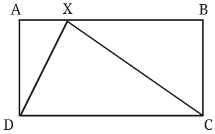
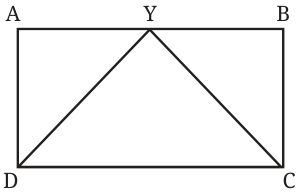
In the given figure, which triangle has a greater area: \(\triangle XDC\) or \(\triangle YBC\), if both the rectangles are identical?
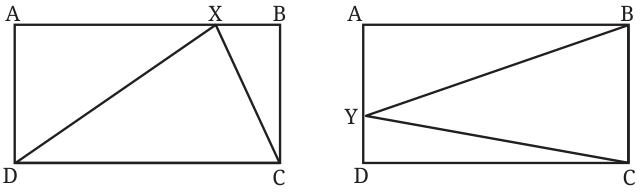
In each case, by dropping the altitudes from X and Y, it becomes clear that each triangle has exactly half the area of the rectangle ABCD. Find the area of \(\triangle XDC\).
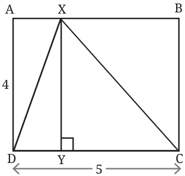
To find the area of a triangle, what measurements do we need? We need the sidelengths of the outer rectangle, as in Fig. 7.1.
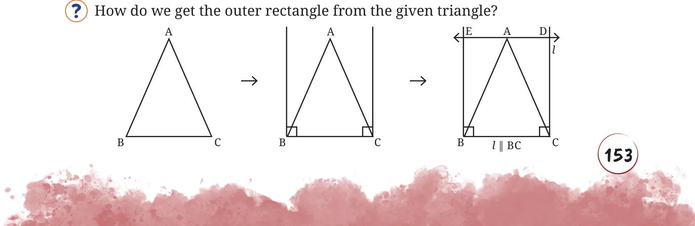

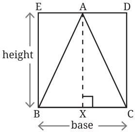
BCDE is a rectangle (how?). Let us take its sidelengths to be height and base. Then,
\(\text{Area}\,(\triangle ABC) = \frac{1}{2} \times \text{base} \times \text{height}\)
Since BXAE is a rectangle (how?), the height of the rectangle is the same as the height of the triangle.
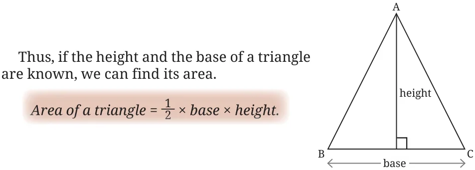
Will this formula hold for the kind of triangle, around which we cannot draw a rectangle with BC as the base?
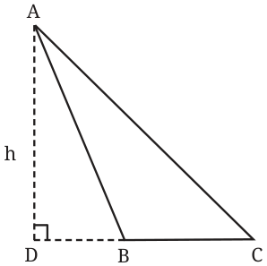
Here is one way to look at it. The area of \(\triangle ABC\) is the difference of the areas of \(\triangle ADC\) and \(\triangle ADB\), each of which can be enclosed in a rectangle, as in Fig. 7.1.
\(\text{Area}\,(\triangle ABC) = \frac{1}{2} \times h \times DC - \frac{1}{2} \times h \times DB\)
\(= \frac{1}{2} \times h\,(DC - DB)\)
\(= \frac{1}{2} \times h \times BC\)
Thus, the area formula holds for all types of triangles.

Some Applications of the Area Formula
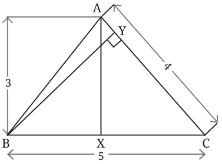
Find BY.
BY can be found using the formula for the area of a triangle.
What is \(\text{Area}\,(\triangle ABC)\)?
\(\text{Area}\,(\triangle ABC) = \frac{1}{2} \times AX \times BC = \frac{15}{2}\) sq. units.
The area of the triangle can also be written as
\(\text{Area}\,(\triangle ABC) = \frac{1}{2} \times BY \times AC = \frac{1}{2} \times 4 \times BY = 2\,BY.\)
Thus,
\(2\,BY = \frac{15}{2}.\)
So, \(BY = \frac{15}{4} = 3.75\) units.
Are the 4 triangles obtained by drawing the diagonals of a rectangle (regions \(1 - 4\) in the figure) of equal areas? Clearly, the triangles \(1 - 4\) are not four congruent triangles. To compare their areas, let us consider any two adjacent triangles, say 1 and 2.
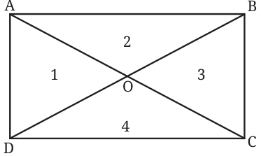
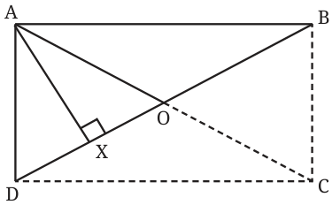
Since the area of a triangle depends on its height and the base, let us consider suitable height-base pairs in each of the triangles. If OD and OB are taken as the bases, then we see that both triangles have the same altitude!
We also have \(OB = OD\), since the diagonals of a rectangle bisect each other. So, the triangles 1 and 2 have equal areas. Arguing this way, we can show that all four triangles have equal areas. From this problem, we can make the following general statement. In a triangle, the line joining a vertex to the midpoint of its opposite side divides
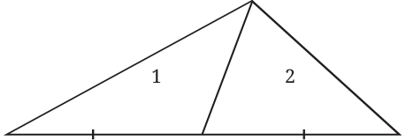
the triangle into two triangles of equal areas.

Triangles between Parallel Lines with a Common Base
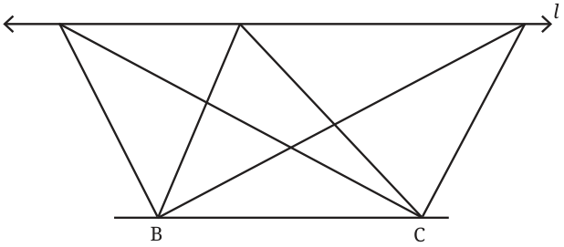
Line \(l \parallel BC\). Consider the different triangles that have BC as their base, and with their third vertex lying anywhere on \(l\).
- Which of these triangles has the maximum area, and which has the minimum area?
- Which of these triangles has the maximum perimeter, and which has the minimum perimeter?
Here, we will only show how to find the triangle with the minimum perimeter, and leave the other questions as exercises. Intuition might suggest that the triangle with the minimum perimeter can be obtained by constructing the perpendicular bisector of BC. But how do we justify that this triangle has the least perimeter among all the triangles?
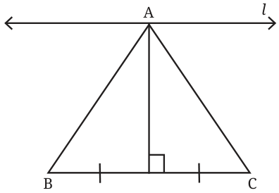
Firstly, note that in all these triangles, BC is a common side. Therefore, it is enough to consider the sum of the other two sides. Let us imagine the line \(l\) as a mirror. Then we get a reflection of all the points and lines below it. While studying the properties of a plane mirror, we experimentally observed that the distance of the image behind the mirror is the same as the distance of the object (that creates the image) in front of the mirror. This law can be used to locate the reflections of the points lying below the line \(l\).
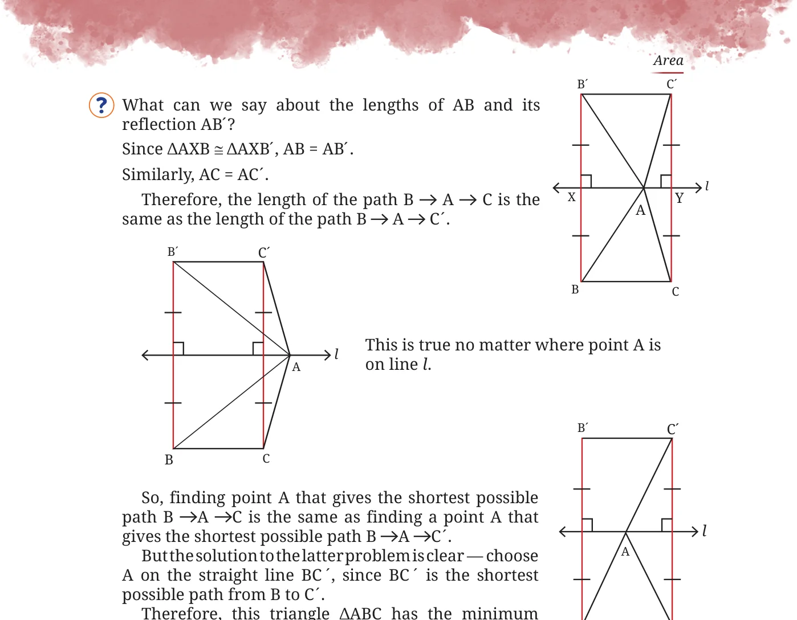
Therefore, this triangle \(\triangle ABC\) has the minimum perimeter.
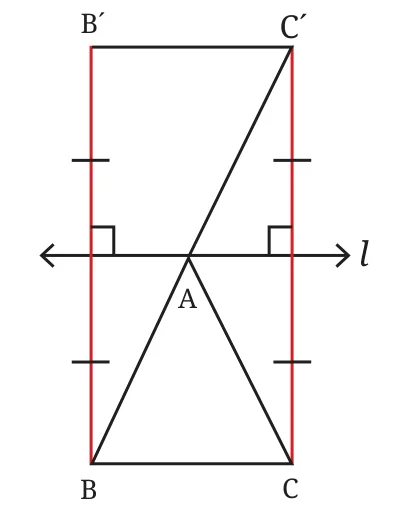
Analyse whether A lies on the perpendicular bisector of BC.